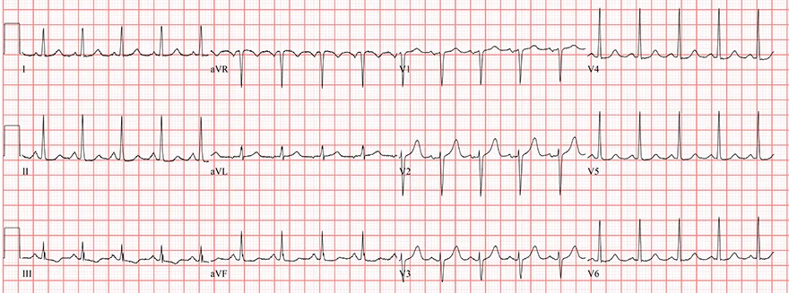
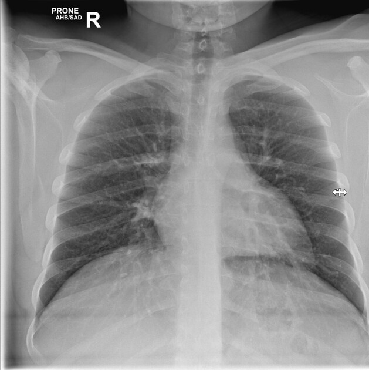
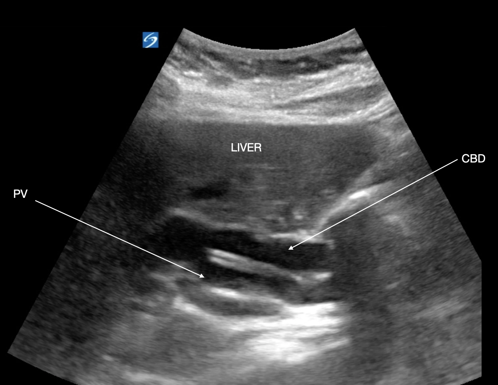
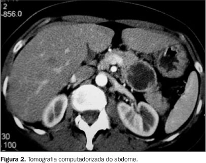

Aguardando solicitação de dados...
Exame Físico (Admissão)
- Estado Geral: Regular a ruim. Visivelmente toxêmica, letárgica, confusa. Glasgow 13 (AO:3, RV:4, RM:6).
- Pele/Mucosas: Descorada (++/4+), intensamente ictérica (++++/4+), desidratada (++/4+), diaforese.
- Sinais Vitais: PA: 80x45 mmHg | FC: 118 bpm | FR: 28 irpm | Temp: 39,1°C | SatO2: 92% (ar ambiente).
- Perfusão: TEC 5 segundos. Extremidades cianóticas (+/4+). Pulsos finos e filiformes.
- Resp./Cardio: Expansibilidade preservada, MV audível sem ruídos. Bulhas rítmicas normofonéticas, sem sopros.
- Abdome: Plano, flácido. Hipertimpânico. Dor à palpação profunda em HD e epigástrio. Blumberg negativo.
Dor no ponto cístico (Murphy difícil avaliar pela alteração do nível de consciência). Massa palpável, lisa, móvel e indolor em HD. RHA presentes, hipoativos.
Hemograma & Coagulograma
| Exame | Resultado | Valor de Referência |
|---|---|---|
| Hemoglobina (Hb) / Ht | 10.2 g/dL / 31% | 12-16 g/dL / 36-46% |
| Leucócitos | 23.500 /mm³ | 4.000 - 10.000 /mm³ |
| Bastões | 20% | 0 - 5% |
| Plaquetas | 110.000 /mm³ | 150.000 - 450.000 /mm³ |
| Tempo de Protrombina (TP) | 16,5 s (INR: 1.55) | Controle: 12,0s |
| TTPA | 38 s (Rel: 1.2) | - |
Função Renal, Eletrólitos e Lactato
| Exame | Resultado | Valor de Referência |
|---|---|---|
| Glicemia Capilar | 178 mg/dL | < 140 mg/dL |
| Ureia / Creatinina | 98 mg/dL / 2,1 mg/dL | 15-45 / 0,6-1,1 mg/dL |
| Sódio / Potássio | 134 mEq/L / 4,1 mEq/L | 135-145 / 3,5-5,0 mEq/L |
| Lactato arterial | 5,4 mmol/L | < 2,0 mmol/L |
| Proteína C Reativa (PCR) | 285 mg/L | < 5,0 mg/L |
| Troponina T us | 12 ng/L | < 14 ng/L |
Perfil Hepático, Biliar e Pancreático
| Exame | Resultado | Valor de Referência |
|---|---|---|
| Bilirrubina Total | 16.8 mg/dL | 0,3 - 1,2 mg/dL |
| Bilirrubina Direta | 14.2 mg/dL | < 0,3 mg/dL |
| Fosfatase Alcalina (FA) | 1.120 U/L | 35 - 104 U/L |
| Gama-GT (GGT) | 850 U/L | 8 - 40 U/L |
| AST (TGO) / ALT (TGP) | 145 U/L / 160 U/L | 10 - 35 U/L |
| Lipase / Amilase | 45 U/L / 80 U/L | Normais |
| Albumina | 2,8 g/dL | 3,5 - 5,0 g/dL |
Gasometria Arterial (Ar ambiente)
| Parâmetro | Resultado |
|---|---|
| pH | 7,26 |
| pCO2 | 29 mmHg |
| pO2 | 70 mmHg |
| HCO3- | 14 mEq/L |
| Base Excess (BE) | -11,0 mmol/L |
| SatO2 | 92% |
Urina 1 (EAS)
- Aspecto/Cor: Turvo. Castanho escuro.
- Densidade/pH: 1.025 / 6.0
- Bilirrubinas: +++
- Urobilinogênio: Normal
- Leucócitos/Hemácias: 5.000 / 2.000 (Normais)
- Nitrito: Negativo
Eletrocardiograma (ECG)
Laudo: Ritmo sinusal, taquicardia (118 bpm). Eixo normal. Sem sinais de isquemia aguda ou alterações do segmento ST/T.
📸 Para exibir imagem: Certifique-se de que o arquivo ecg.png está na mesma pasta.

Radiografia de Tórax (Leito)
Laudo: Sem consolidações, sem pneumoperitônio detectável sob as cúpulas diafragmáticas. Área cardíaca normal.
📸 Para exibir imagem: Certifique-se de que o arquivo rx-torax.png está na mesma pasta.

POCUS / USG Abdominal Total
- Fígado/Vias Biliares: Intensa dilatação das vias biliares intra-hepáticas. Colédoco acentuadamente dilatado (17 mm no terço proximal/médio).
- Vesícula Biliar: Acentuadamente distendida (hidrópica), paredes finas, sem cálculos (alitiásica).
- Pâncreas: Imagem nodular hipoecogênica (aprox. 4.5x4.0 cm) na transição da cabeça, promovendo amputação abrupta do colédoco distal.
- Cavidade: Sem líquido livre. Aorta normal. Rins sem hidronefrose.
📸 Para exibir imagem: Certifique-se de que o arquivo usg.png está na mesma pasta.

Tomografia Computadorizada (TC) de Abdome
FEITA APÓS ESTABILIZAÇÃO- Fígado e Vias Biliares: Acentuada dilatação intra e extra-hepática. Colédoco atinge 18 mm. Vesícula hiperdistendida (12x5 cm), alitiásica.
- Pâncreas: Presença de lesão expansiva, sólida, hipoatenuante na topografia da cabeça pancreática (4.5x4.2x4.0 cm). Determina obstrução abrupta do colédoco e do ducto de Wirsung (dilatado com 6mm).
- Linfonodos: Linfonodomegalias peripancreáticas e no hilo hepático.
- Vasos/Outros: Sem sinais de isquemia mesentérica. Rins normais. Sem pneumoperitônio.
📸 Para exibir imagem: Certifique-se de que o arquivo tc-abdome.png está na mesma pasta.

Radiografia de Tórax (Leito)
Laudo: Sem consolidações, sem pneumoperitônio detectável sob as cúpulas diafragmáticas. Área cardíaca normal.
📸 Para exibir imagem: Suba um arquivo chamado rx-torax.jpg na mesma pasta do GitHub.
![[Imagem RX]](rx-torax.jpg)
POCUS / USG Abdominal Total
- Fígado/Vias Biliares: Intensa dilatação das vias biliares intra-hepáticas. Colédoco acentuadamente dilatado (17 mm no terço proximal/médio).
- Vesícula Biliar: Acentuadamente distendida (hidrópica), paredes finas, sem cálculos (alitiásica).
- Pâncreas: Imagem nodular hipoecogênica (aprox. 4.5x4.0 cm) na transição da cabeça, promovendo amputação abrupta do colédoco distal.
- Cavidade: Sem líquido livre. Aorta normal. Rins sem hidronefrose.
📸 Para exibir imagem: Suba um arquivo chamado usg.jpg na mesma pasta do GitHub.
![[Imagem USG]](usg.jpg)
Tomografia Computadorizada (TC) de Abdome
FEITA APÓS ESTABILIZAÇÃO- Fígado e Vias Biliares: Acentuada dilatação intra e extra-hepática. Colédoco atinge 18 mm. Vesícula hiperdistendida (12x5 cm), alitiásica.
- Pâncreas: Presença de lesão expansiva, sólida, hipoatenuante na topografia da cabeça pancreática (4.5x4.2x4.0 cm). Determina obstrução abrupta do colédoco e do ducto de Wirsung (dilatado com 6mm).
- Linfonodos: Linfonodomegalias peripancreáticas e no hilo hepático.
- Vasos/Outros: Sem sinais de isquemia mesentérica. Rins normais. Sem pneumoperitônio.
📸 Para exibir imagem: Suba um arquivo chamado tc-abdome.jpg na mesma pasta do GitHub.
![[Imagem TC]](tc-abdome.jpg)
ATENÇÃO DA ENFERMAGEM
Novos Sinais Vitais (Reavaliação)
- Nível de Consciência: Glasgow 8 (AO:2, RV:2, RM:4).
- Pressão Arterial: 65 x 40 mmHg
- Frequência Cardíaca: 132 bpm
- Frequência Respiratória: 34 irpm (Uso de musculatura acessória)
- Saturação O2: 87% (Mesmo com O2 a 3L/min)